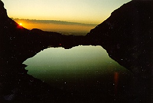

— RMNP Climbing
Welcome to one of America’s best climbing schools located in one of America’s best climbing areas, Rocky Mountain National Park.
Nowhere else in America is there such a rich variety of technically challenging rock, ice and high alpine routes. The area presents the climber a choice of either one and two pitch climbs, or big wall and fourteen thousand foot mountaineering. Whether you are here to enjoy the spectacular scenery or to train for an expedition, you can choose no better place than Rocky Mountain National Park.
And no one else brings the experience of the Rockies to you better than The Colorado Experience. Whether you are a beginner, itching to learn the skill and art of climbing, or an experienced mountaineer looking for guides to take you on some of RMNP’s more challenging climbs, consider us your gateway to the mountains.
We provide five levels of instruction, ranging from Beginner to Advanced, including lessons in aid and ice climbing. Members of our experienced staff have led expeditions in Mexico, Nepal and Pakistan. All have intimate knowledge of Rocky Mountain National Park and know the best places to go to help you experience the wonder and beauty of the park.
So call us today, and enjoy the Colorado Experience tomorrow!
The Colorado Experience
2411 Agnes Avenue
Vale Park, CO 80517